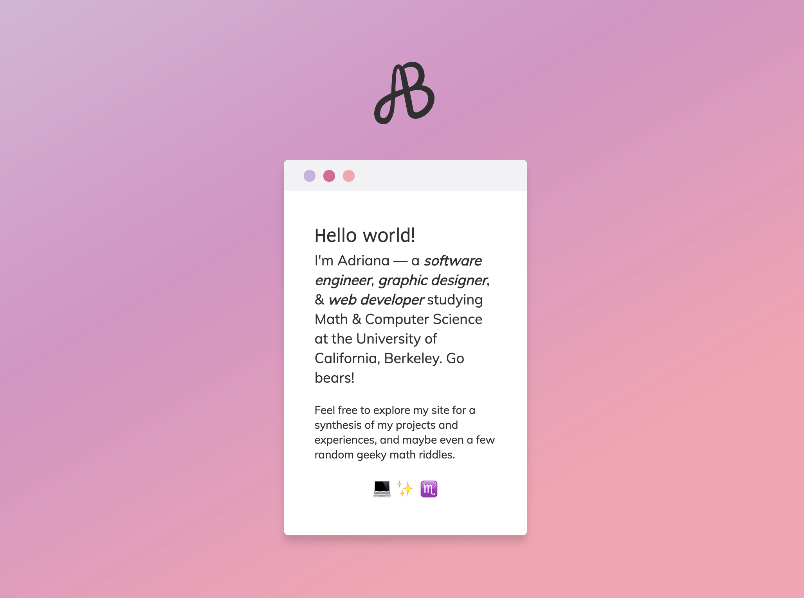

Personal Portfolio Rebuild
I built the previous iteration of my personal site
up from sratch when I was just becoming familiar with web development. Although
it was very rewarding to start with blank HTML, stylesheets, and scripts and then
StackOverflow my way through every obstacle I encountered, my from-the-ground-up
approach resulted in laggy page loads and suboptimal programming style. So, I
decided to teach myself AngularJS in order to build a faster and cleaner site. It is
still a work in progress, and I am excited to continue working on it!
Things to look forward to: command-line inspired user interface, more hidden animations,
and enhanced responsiveness.
